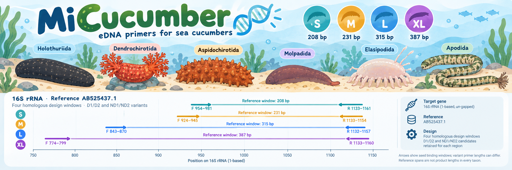
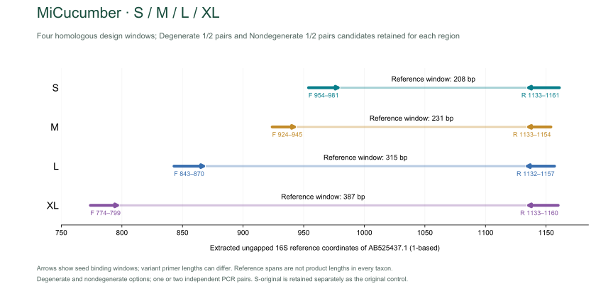
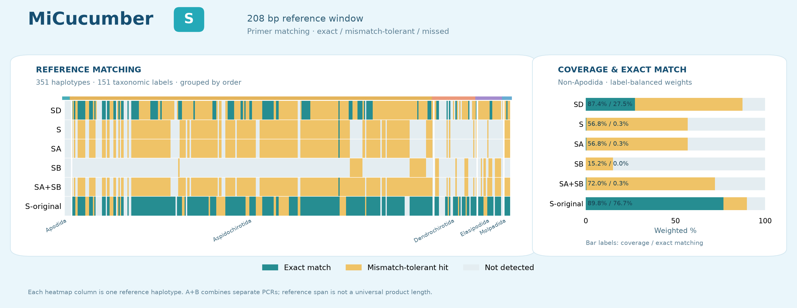
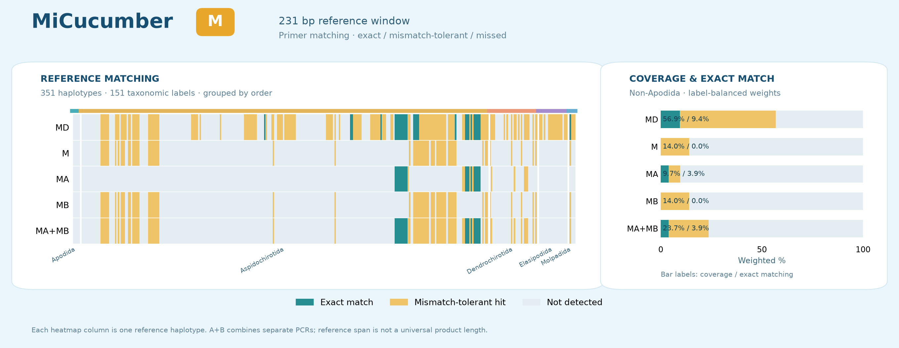
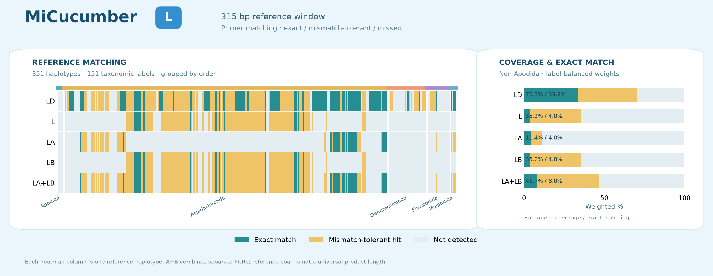
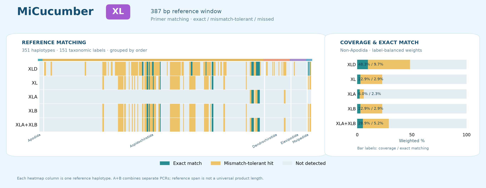

插画中的配对标注以当前表格为准 / Current pair names are given in the tables below.
简并：SD、MD、LD、XLD；普通单对：S、M、L、XL；普通两对：SA/SB、MA/MB、LA/LB、XLA/XLB。
D: degenerate; A/B: component pairs. A+B denotes their combined coverage.
建议首先实验验证 S-D-1pair；无简并版保留为对照，S-original有较高非目标命中。/ Prioritize S-D-1pair for experimental evaluation; ND sets are comparators, and S-original has extensive background hits. 所有方案尚无湿实验验证。 / No wet-lab validation.
中文概览 · English overview · 全部序列 CSV · FASTA · 复现 / Reproduction

共同面板151个分类名称标签、351个标签内单倍型；非Apodida为145个标签。标签及标签内单倍型等权。背景命中以5,600条记录的accession并集计，不是reads比例。/ Common panel: 151 name labels, 351 within-label haplotypes; 145 non-Apodida labels. Equal label and within-label haplotype weighting. Background counts are accession unions, not read fractions.
蓝绿色：完全匹配；金黄色：允许错配命中；浅灰色：未命中。每列为一个单倍型，柱图为非Apodida加权比例。A、B单独显示，并给出合并覆盖。
Teal: exact; gold: mismatch-tolerant hit; light gray: missed. Heatmaps show individual haplotypes; bars use non-Apodida weights.




匹配汇总 / Summary · 逐条结果 / Per-reference results
| 方案 / Portfolio | 非Apodida覆盖 / Coverage | 非Apodida完全匹配 / Exact | 全部目标覆盖 / All coverage | 全部目标完全匹配 / All exact | WC≤3 | GT≤2 | WC≤4 |
|---|---|---|---|---|---|---|---|
| SD | 87.45% | 27.48% | 83.97% | 26.39% | 2 | 0 | 742 |
| MD | 56.90% | 9.43% | 54.64% | 9.05% | 0 | 0 | 130 |
| LD | 70.26% | 33.63% | 67.47% | 32.30% | 4 | 0 | 109 |
| XLD | 48.34% | 9.71% | 46.42% | 9.33% | 0 | 0 | 486 |
| 方案 / Portfolio | 非Apodida覆盖 / Coverage | 非Apodida完全匹配 / Exact | 全部目标覆盖 / All coverage | 全部目标完全匹配 / All exact | WC≤3 | GT≤2 | WC≤4 |
|---|---|---|---|---|---|---|---|
| S | 56.78% | 0.34% | 54.53% | 0.33% | 0 | 0 | 2 |
| SA+SB | 71.96% | 0.34% | 69.10% | 0.33% | 0 | 0 | 2 |
| M | 14.05% | 0.00% | 13.49% | 0.00% | 0 | 0 | 0 |
| MA+MB | 23.70% | 3.91% | 22.76% | 3.75% | 0 | 0 | 0 |
| L | 35.24% | 3.97% | 33.84% | 3.81% | 0 | 0 | 0 |
| LA+LB | 46.68% | 8.00% | 44.83% | 7.69% | 0 | 0 | 0 |
| XL | 22.88% | 2.93% | 21.97% | 2.81% | 0 | 0 | 0 |
| XLA+XLB | 28.86% | 5.23% | 27.71% | 5.02% | 0 | 0 | 1 |
| 方案 / Portfolio | 非Apodida覆盖 / Coverage | 非Apodida完全匹配 / Exact | 全部目标覆盖 / All coverage | 全部目标完全匹配 / All exact | WC≤3 | GT≤2 | WC≤4 |
|---|---|---|---|---|---|---|---|
| MiCucumber-S-original | 89.84% | 76.75% | 86.27% | 73.70% | 3248 | 3401 | 3923 |
D 漏检类群 · ND 漏检类群 · D 非目标命中 · ND 非目标命中
Copyright © 2026 Fei Xia (GUIBA-EX). All rights reserved / 著作权声明.
| Pair name | F (5′→3′) | R (5′→3′) |
|---|---|---|
| SD | HHAGWAAGACGAGAAGACCCTGTCGAGC | TCCCTGCGGTAACTTTTTCYGWTTWCCAR |
| MD | YTTCTAYYTAYGTGAAGAAGCR | GGTAACTTTTTCYGWWTWCCAR |
| LD | GCATAATCAYTTGTCTYTTAAATGRRGA | TGCGGTAACTTTTTCYGWTTWCCARW |
| XLD | YATAARGGGTCMMGCCTGCCCAGTGG | CCCTGCGGTAACTTTTTCYGWWTWCCAR |
| S | AAAGAAAGACGAGAAGACCCTGTCGAGC | TCCCTGCGGTAACTTTTTCCGATTACCAG |
| SA | AAAGAAAGACGAGAAGACCCTGTCGAGC | TCCCTGCGGTAACTTTTTCCGATTACCAG |
| SB | AAAGAAAGACGAGAAGACCCTGTCGAGC | TCCCTGCGGTAACTTTTTCCGTTTTCCAA |
| M | CTTCTATTTACGTGAAGAAGCG | GGTAACTTTTTCTGTTTACCAG |
| MA | CTTCTATTTACGTGAAGAAGCG | GGTAACTTTTTCCGTTTTCCAA |
| MB | CTTCTATTTACGTGAAGAAGCG | GGTAACTTTTTCTGTTTACCAG |
| L | GCATAATCATTTGTCTTTTAAATGGAGA | TGCGGTAACTTTTTCCGATTACCAGT |
| LA | GCATAATCACTTGTCTCTTAAATGGGGA | TGCGGTAACTTTTTCCGTTTTCCAGA |
| LB | GCATAATCATTTGTCTTTTAAATGGAGA | TGCGGTAACTTTTTCCGATTACCAGT |
| XL | TATAAAGGGTCCCGCCTGCCCAGTGG | CCCTGCGGTAACTTTTTCCGATTACCAG |
| XLA | CATAAGGGGTCAAGCCTGCCCAGTGG | CCCTGCGGTAACTTTTTCCGTTTTCCAA |
| XLB | TATAAAGGGTCCCGCCTGCCCAGTGG | CCCTGCGGTAACTTTTTCCGATTACCAG |
| MiCucumber-S-original | GWWAGACGARAAGACCCTG | CCCTRCGGTAACTWTTTCYG |